🛒 Hướng dẫn cho người đặt hàng
KH cung ứng · NV đặt hàng · người lập PO. Bạn chịu trách nhiệm đơn từ lúc lập đến khi hàng về đủ.
- Mở LK đặt → nhóm Cần xử lý: nhập ngày dự kiến / thúc NCC / giải trình cho các dòng ở đây.
- Thứ 2 và thứ 4: mọi dòng chưa có ngày dự kiến phải được push / mail / gọi NCC (quy tắc R3).
- Mở Vi phạm & giải trình → Của tôi: giải trình hết lỗi đang chờ.
- Xem số đỏ cạnh menu — đó là việc đang chờ bạn.
1. Tạo PO (EO) mới
- Vào Đơn PO → bấm ＋ Tạo EO (góc phải thanh lọc).
- Điền Tiêu đề, Loại hình (dòng nhỏ dưới ô là ý nghĩa loại hình), Phòng ban. Phòng ban kho vận tự gán kho cho các dòng.
- Thêm dòng linh kiện: bấm Thêm dòng, gõ mã linh kiện (app gợi ý mã đã từng đặt), số lượng, kho, đối tác và lý do phát sinh (chỉ 5 giá trị: Ký gửi · Đặt lần đầu · Kế hoạch tháng · Phát sinh · Hết hàng). Nhiều dòng: Tải file mẫu → điền → Import Excel.
- Đính kèm (tuỳ chọn): Chọn tệp đính kèm — Excel / ảnh / PDF / Word ≤ 20MB.
- Chọn người thẩm định và người duyệt mua.
- Lưu nháp để làm tiếp sau, hoặc Gửi trình duyệt để chuyển sang người duyệt.
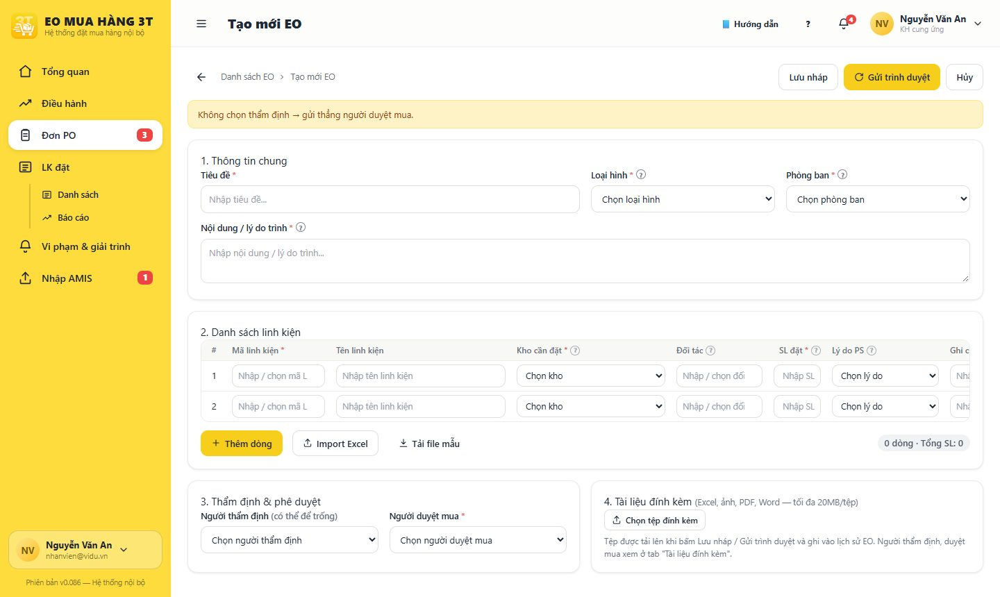
2. Theo dõi PO
Vào Đơn PO. Mặc định là nhóm EO còn tồn (chưa ban hành hoặc còn dòng chưa về đủ).

| Cột | Ý nghĩa |
|---|---|
| Tiến trình | Lập → Thẩm định → Duyệt mua → Có ngày DK → Chờ hàng → Giao bù → ✓ Đủ hàng. PO đã ban hành: mốc sớm nhất còn dòng đang ở; "+2 bước" = còn dòng ở bước khác; "3 trễ" = số dòng trễ hạn giai đoạn. |
| Cảnh báo | Số dòng đỏ / vàng của PO (xem quy tắc ở Mục lục). |
| Thúc NCC | Số lần push / mail gửi NCC / gọi-Zalo trong 7 ngày (xanh = có, đỏ = 0) + lần cuối. |
| Hoạt động cuối | "Im lặng n ngày" = bao lâu không ai cập nhật, push, mail, gọi hay giải trình; dòng dưới: việc cuối · ai làm. |
Bấm 1 dòng → popup PO: luồng 8 giai đoạn, tab Linh kiện / Kế hoạch & hàng về / Quy trình duyệt / Tài liệu / Mail & push, nhật ký xử lý bên phải.

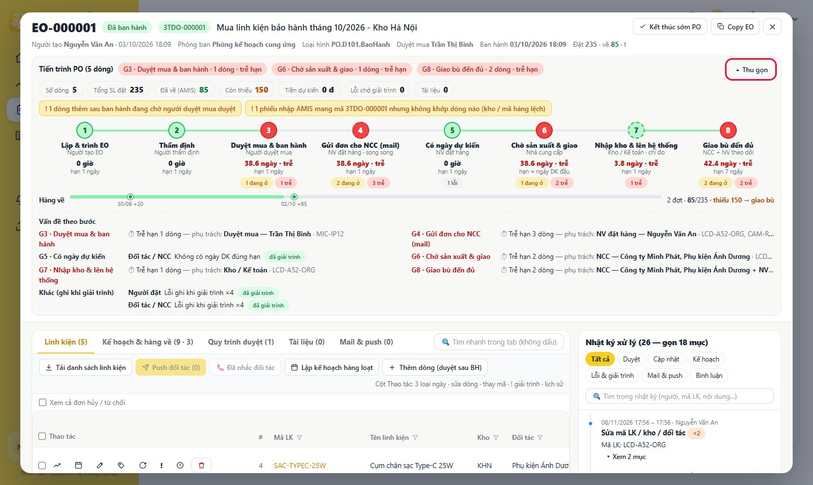
Lưu bộ lọc của riêng bạn
- Ở Đơn PO, chọn nhóm nhanh, gõ ô tìm, lọc / sắp xếp cột như ý.
- Bấm ★ Đã lưu → ＋ Lưu bộ lọc hiện tại → đặt tên (vd "PO đỏ của tôi").
- Lần sau: bấm ★ Đã lưu → chọn tên. Bấm ☆ cạnh tên để đặt mặc định khi mở Đơn PO (★ vàng = đang mặc định).
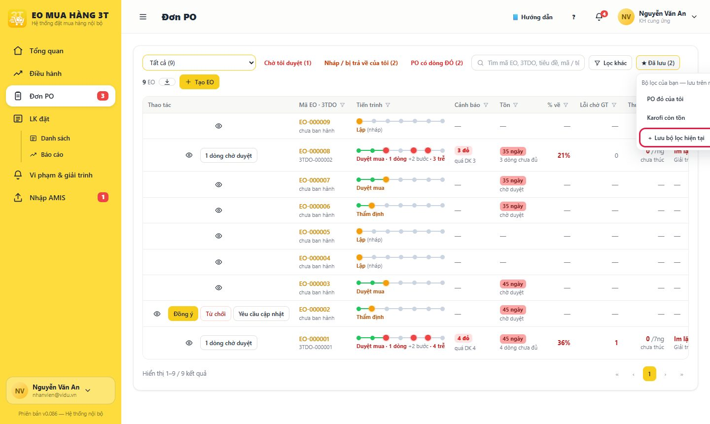
3. Tìm kiếm
- Tra mã linh kiện: Tổng quan → ô 🔍 Tra linh kiện, gõ mã hoặc tên (không cần dấu) → chọn → popup mã linh kiện: mọi PO đã đặt mã đó, hàng về AMIS, lỗi, lịch sử.
- Tìm PO: Đơn PO → ô tìm (mã EO, 3TDO, tiêu đề, mã / tên linh kiện).
- Lọc theo cột: bấm biểu tượng phễu trên tiêu đề cột — chữ (tìm theo từ), chọn giá trị (tick), ngày (từ – đến), số (từ – đến). Bấm tiêu đề để sắp xếp.
- Bộ lọc ít dùng (kho, đối tác, lý do PS): nút Lọc khác.
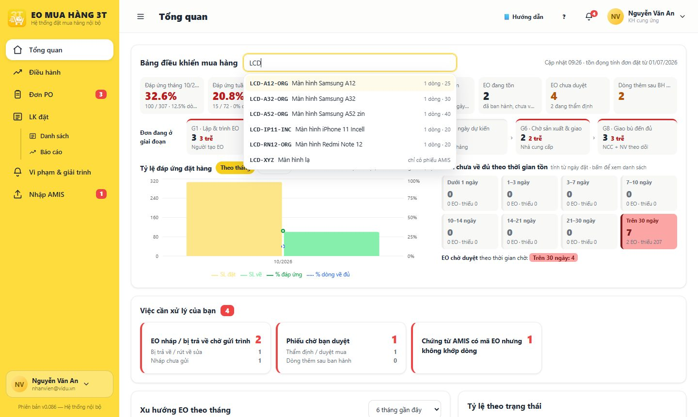
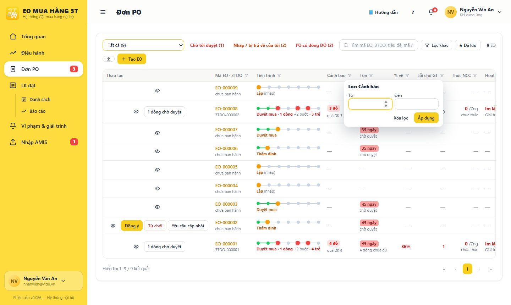
4. LK đặt — nơi làm việc hằng ngày
Mỗi dòng = 1 linh kiện trong 1 PO. Mặc định nhóm Còn chờ hàng. Ô Xem: từng dòng / nhóm theo PO / nhóm theo mã LK.

| Nhóm nhanh | Dùng khi |
|---|---|
| Cần xử lý | Danh sách việc phải làm ngay: cần ngày DK, quá ngày DK, lỗi chờ giải trình. |
| Trễ hạn chưa có ngày DK / Chờ ngày DK | Dòng chưa có ngày dự kiến (R1). |
| Quá ngày dự kiến | Đã quá hẹn mà chưa về đủ (R4) — hỏi lại NCC. |
| Lỗi chờ giải trình · Cấp CEO | Phải giải trình. |
| Dự kiến về tuần này / tuần sau | Báo kho chuẩn bị nhận. |
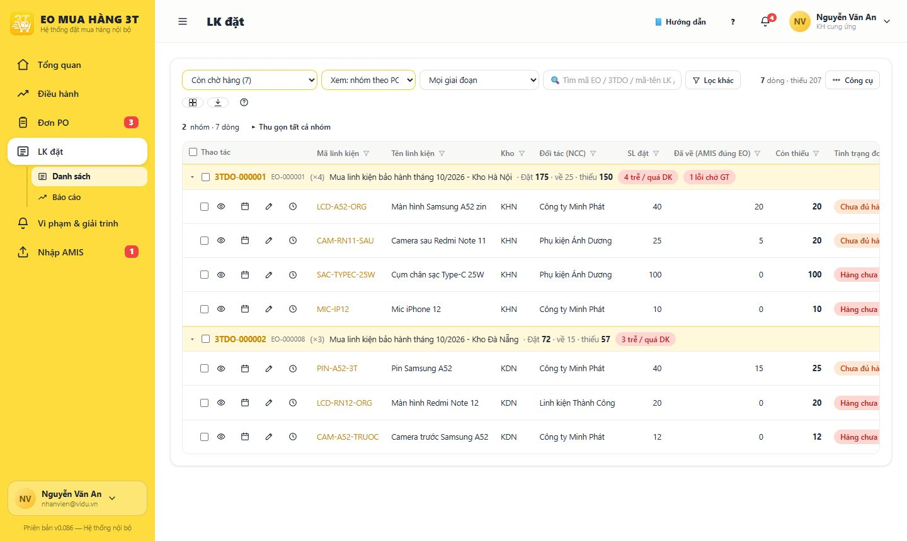
5. Nhập ngày dự kiến / ngày nhà máy cam kết
- LK đặt → bấm 📅 ở cột Thao tác (hoặc bấm dòng → popup đơn hàng → Ngày NM / dự kiến / hàng về).
- Nhập ngày nhà máy cam kết (NCC hẹn) — để trống ngày dự kiến thì app lấy theo ngày NM. Giao nhiều đợt: thêm nhiều đợt, tổng SL ≤ SL đặt.
- Lưu. Lùi ngày sang muộn hơn được đếm là 1 lần lùi (≥ 3 lần → cấp CEO).
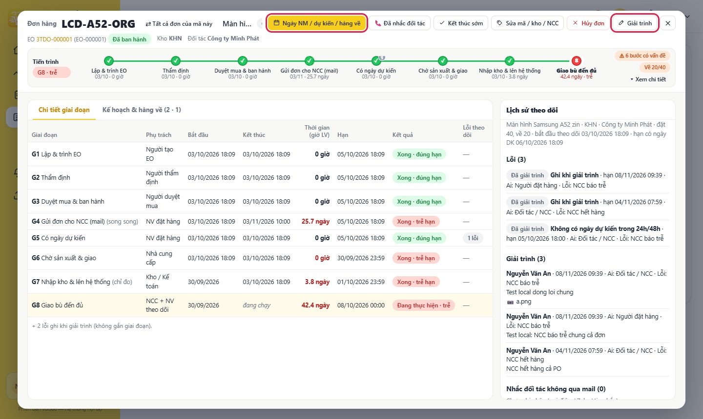
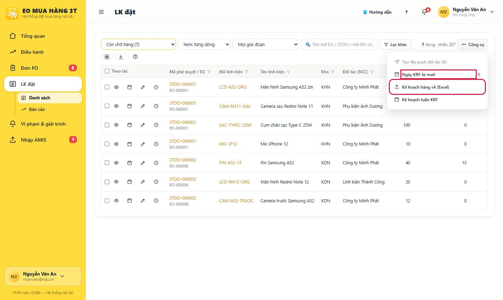
6. Push NCC (đề nghị xác nhận ngày giao)
- LK đặt → tick các dòng cần thúc (ô tick ở cột Thao tác; tick tiêu đề nhóm = cả nhóm).
- Bấm Push (n). App tạo mỗi NCC 1 file Excel + tiêu đề mail chuẩn (mã PUSH-…).
- Gửi mail cho NCC, CC theodoimuahang@gmail.com, giữ nguyên tiêu đề và tên file.
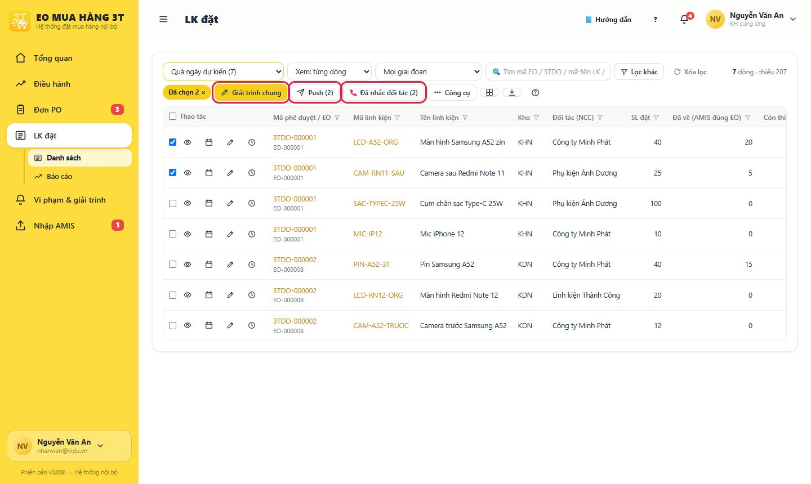
Nhắc NCC bằng điện thoại / Zalo / tin nhắn
- Tick dòng → 📞 Đã nhắc đối tác (n) (hoặc trong popup đơn hàng / popup PO).
- Chọn kênh, ngày giờ (tối đa 7 ngày trước), người liên hệ bên NCC, kết quả NCC trả lời (bắt buộc), ảnh chụp nếu có.
- Lưu: tính như đã push. Ghi muộn vẫn tự bỏ lỗi R3 của kỳ có ngày liên hệ.
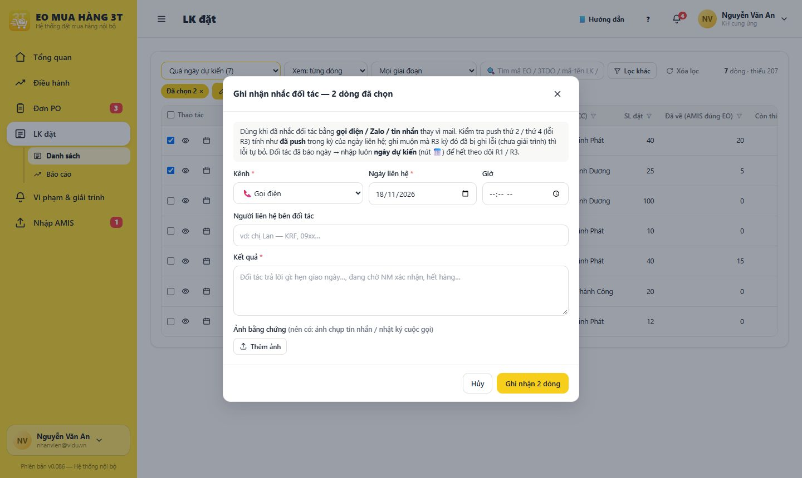
7. Giải trình lỗi
Mọi lỗi phải giải trình đủ 3 phần: Ai chịu trách nhiệm (Người đặt hàng / Đối tác-NCC / Kho / Kế toán / Người duyệt / Khác) · Lỗi gì · Nội dung. Lỗi R1 / R4 bắt buộc ảnh bằng chứng. Chọn đúng "Ai" — đây là nguồn để lãnh đạo biết nguyên nhân thật (vd NCC báo trễ thì chọn Đối tác / NCC).
| Cách | Khi nào | Vào đâu |
|---|---|---|
| Giải trình chung nhiều dòng | Nhiều dòng cùng 1 nguyên nhân (vd NCC báo trễ cả đơn) | LK đặt → tick dòng / cả nhóm → Giải trình chung |
| Giải trình 1 dòng | Lỗi riêng của 1 dòng | LK đặt → ✏️ ở cột Thao tác · popup đơn hàng → Giải trình |
| Giải trình cả PO | Mọi dòng của 1 PO | Popup PO → giải trình cả PO |
| Nhiều lỗi cùng loại | Tick nhiều lỗi R3 cùng loại | Vi phạm & giải trình → tick → giải trình chung |
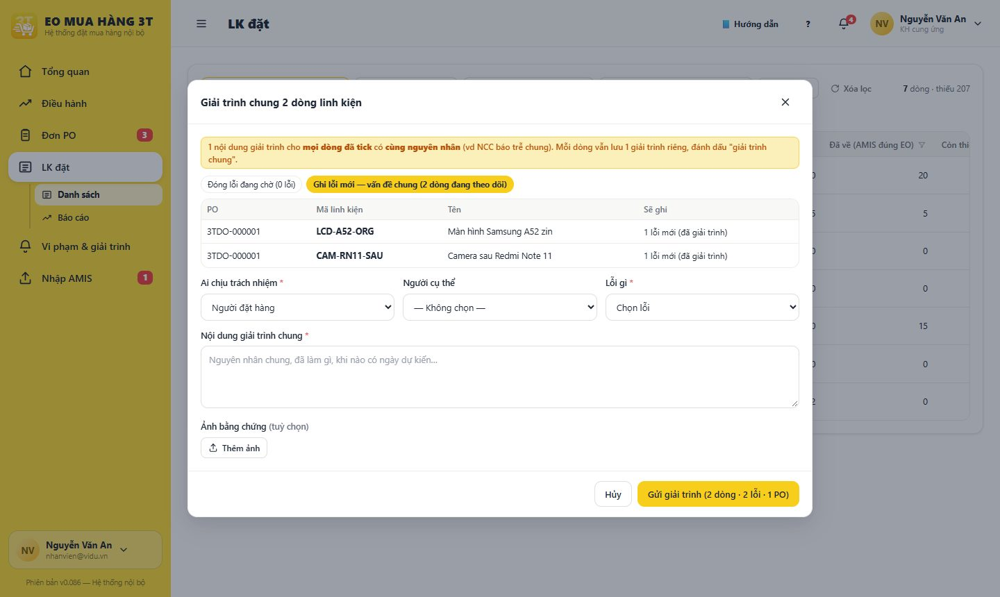
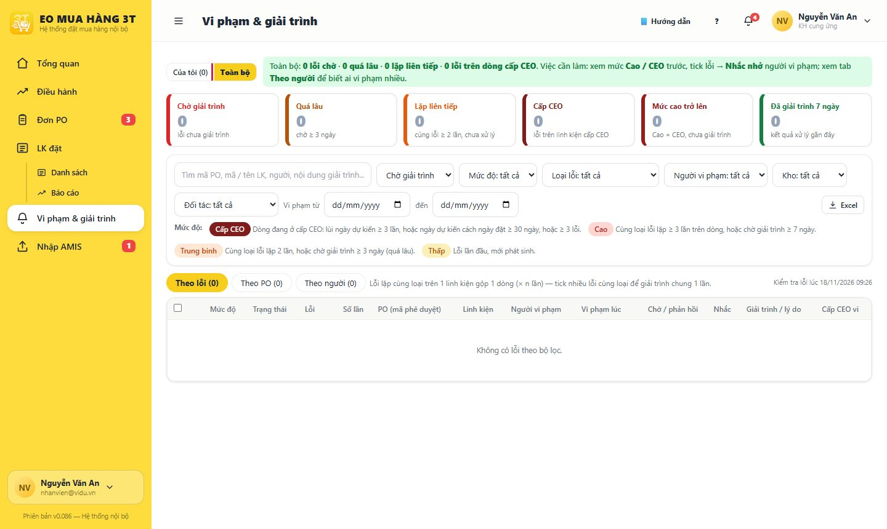
8. Thay đổi sau khi PO đã ban hành
| Việc | Cách làm |
|---|---|
| Thêm linh kiện vào PO | Popup PO → Thêm dòng (duyệt sau BH) → người duyệt mua duyệt dòng. |
| Giảm số lượng | Sửa dòng (bắt buộc lý do). Kế hoạch vượt SL mới tự cắt từ đợt xa nhất. |
| Thay mã tương đương | Popup PO → thay mã; AMIS khớp theo cả mã gốc và mã mới. |
| Sửa mã / kho / đối tác nhập sai | Popup đơn hàng → Sửa mã / kho / NCC (bắt buộc lý do). |
| NCC giao thiếu, không giao nữa | Kết thúc sớm (dòng / cả PO / theo mã LK khi NCC ngừng sản xuất) — SL đặt = SL đã về. |
| Hủy 1 dòng | Popup đơn hàng → Hủy đơn (bắt buộc lý do). |